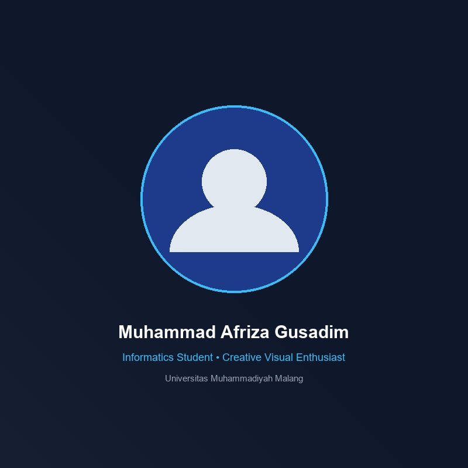
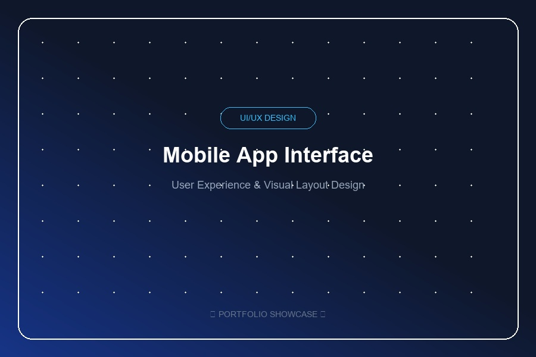
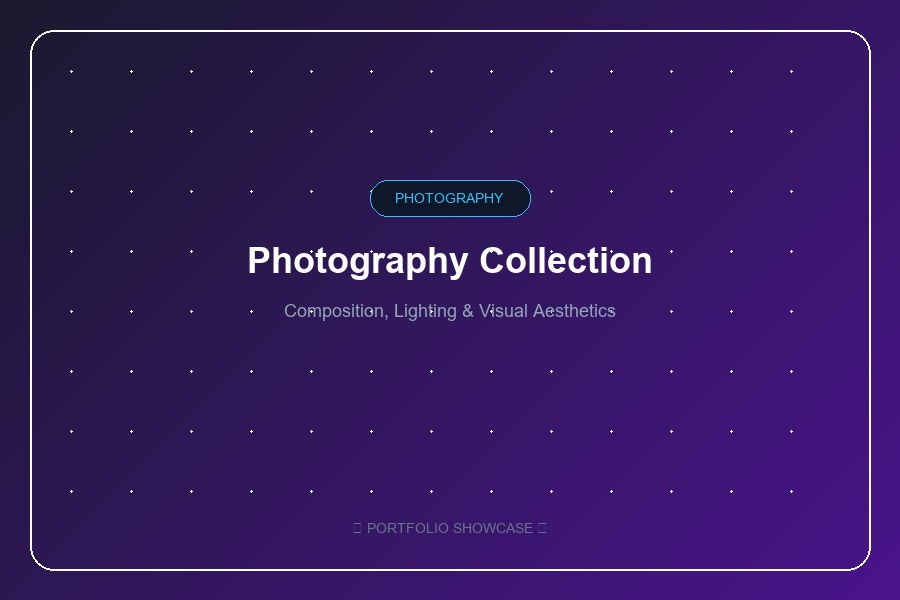
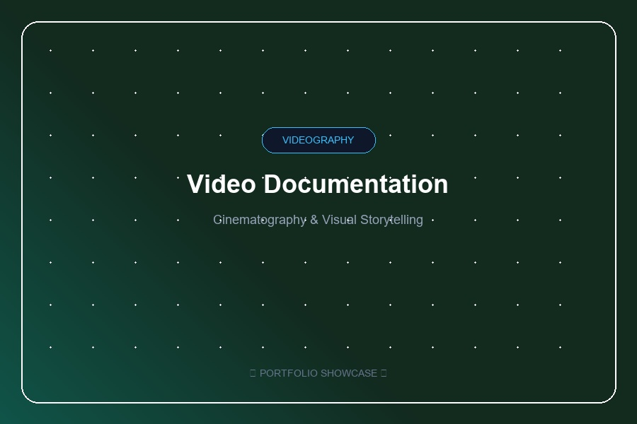
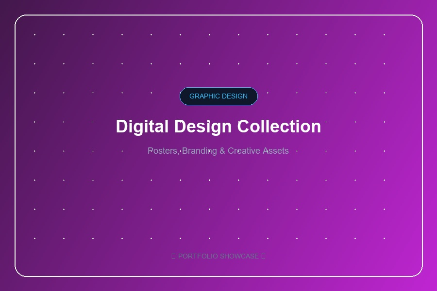
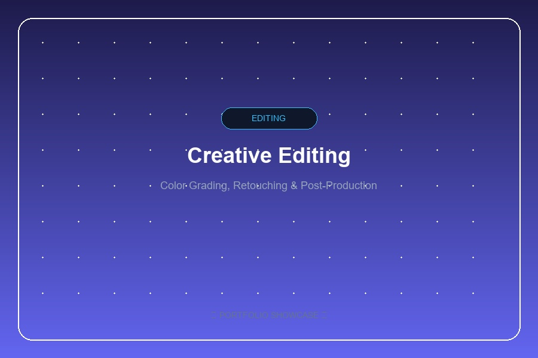

UI/UX Design
Merancang tampilan dan pengalaman pengguna dengan memperhatikan layout, navigasi, usability, dan visual interface.
Interface & Experience
Informatics Student & Creative Visual Enthusiast
Mahasiswa Informatika yang memiliki ketertarikan pada UI/UX, desain visual, fotografi, videografi, serta editing foto dan video.

Saya adalah seorang mahasiswa program studi Informatika di Universitas Muhammadiyah Malang, Fakultas Teknik. Berada di lingkungan komputasi dan teknologi membuka pandangan saya bahwa perpaduan antara logika sistem dan estetika visual mampu menciptakan dampak komunikasi yang kuat.
Di samping bidang informatika, saya memiliki ketertarikan dan passion mendalam pada ranah kreatif dan visual. Saya sangat tertarik dengan UI/UX Design dan bagaimana rancangan antarmuka yang intuitif dapat memberikan pengalaman terbaik serta mempermudah pengguna dalam berinteraksi dengan produk digital.
Selain desain antarmuka, saya aktif mengasah minat di bidang fotografi dan videografi. Melalui lensa kamera, saya mengeksplorasi komposisi, pencahayaan, sudut pengambilan gambar, hingga storytelling sinematik. Kemampuan ini didukung oleh kecakapan dalam editing foto dan video untuk menghasilkan karya akhir yang berkarakter dan memiliki nilai estetika tinggi.
Saya juga mendalami desain grafis dan pembuatan konten visual kreatif. Dengan kemauan belajar yang tinggi, saya terus mengembangkan kemampuan visual ini melalui berbagai project kreatif dan eksperimen karya secara konsisten.
Kumpulan keahlian utama yang berfokus pada perancangan antarmuka, produksi konten visual, serta seni sinematografi dan editing.
Merancang tampilan dan pengalaman pengguna dengan memperhatikan layout, navigasi, usability, dan visual interface.
Menghasilkan foto dengan memperhatikan komposisi, pencahayaan, angle, dan estetika visual.
Membuat dan mengambil video dengan memperhatikan komposisi, pengambilan gambar, storytelling, dan visual.
Mengolah foto dan video agar menghasilkan visual yang lebih menarik dan sesuai dengan kebutuhan.
Membuat berbagai desain visual seperti poster, konten digital, branding, dan kebutuhan desain lainnya.
Eksplorasi karya nyata yang menonjolkan estetika antarmuka, visual fotografi, dokumentasi video, dan grafis digital.

UI/UXPerancangan interface aplikasi mobile dengan fokus pada struktur layout, navigasi, dan pengalaman pengguna.

PhotographyKumpulan hasil fotografi dengan fokus pada komposisi, pencahayaan, angle, dan storytelling visual.

VideographyProject videografi yang berfokus pada dokumentasi kegiatan dan penyampaian cerita melalui visual.

Graphic DesignKumpulan desain digital seperti poster, konten media sosial, dan kebutuhan visual lainnya.

EditingHasil pengolahan foto dan video melalui proses editing untuk menghasilkan visual yang lebih menarik.
Menempuh pendidikan tinggi di bidang Informatika dengan minat khusus pada integrasi teknologi informasi, desain antarmuka (UI/UX), dan kreasi konten multimedia visual yang komunikatif dan fungsional.
Tertarik untuk berkolaborasi dalam project visual, desain UI/UX, atau dokumentasi kreatif? Silakan hubungi saya melalui saluran di bawah ini.
Jangan ragu untuk menyapa atau bertukar gagasan mengenai desain dan produksi visual.
Isi formulir di bawah ini untuk mengirimkan pesan atau penawaran kerja sama.